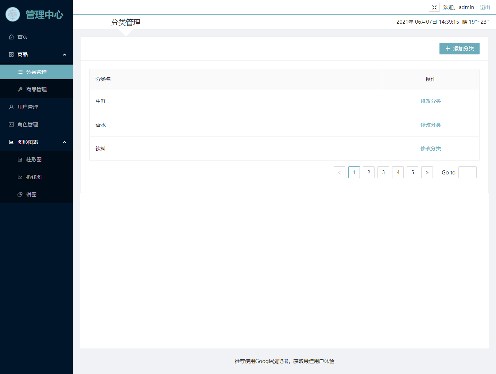

个人晚报
基于多模态配准的脑功能融合分析
精神性疾病不只在中国，已成为当今世界最常见的一种疾病，并且正以较快的速度增长，成为严重威胁人类健康和影响社会安定的重要因素。
多模态核磁共振脑图像为我们探索脑神经提供了从结构到功能的影像学信息,许多研究表明一些精神性或神经性疾病都会引起脑结构和脑功能的变化（如自闭症谱系障碍(ASD)，阿尔兹海默症（AD）和轻度认知障碍(MCI)）,这些变化可能存在内在的联系。
基于pytorch、VM卷积神经网络，利用递归级联的思想完成低分辨率的功能图像（fMRI)要与高分辨率的解剖图像（sMRI）配准融合，完成人脑脑功能和脑结构的多模态融合，针对ABIDE和ADNI数据集完成训练。
基于数据驱动的方式完成脑功能分区，使用多模态配准的结果完成脑网络构建以及自闭症疾病融合分析。在同一副配准图像上同时获得功能分区和结构分区。


多 模 态 配 准 的 网 络 结 构
与同模态配准相比，多模态配准存在携带信息较多，影像序列存在时间差异，功能影像和结构影像像素级别差异性较大等问题。为解决这些问题，提出了基于多模态融合的影响配准方法，将时序序列在时间维度进行采样，保留功能影像的时序信息，同时提高功能影像精度。针对多模态影像之间差异较大的问题，建立了多个配准子网，在配准网络中同时完成刚性配准和非刚性配准，减少图像预处理的难度，使用基于递归级联的配准网络训练方法，进行多次递归，减少了因差异化而为配准网络带来的训练难度。针对多模态图像携带信息多样化问题，在训练中引入LPBA概率脑图谱，完成多模影像与现有脑图谱的融合，为配准网络的训练结果提供了更好的解释性。
功能性磁共振成像
功能磁共振数据包括解剖（结构）像和功能像两类。解剖像采用高分辨的T1、T2及FSPGR三维成像方式。功能像的处理是fMRI数据处理的关键,现在大都采用EPI(Echo planar Imaging)序列采集fMRI功能像。
结构性核磁共振成像
传统医学上的核磁共振，是为了产生某一组织结构的一项成像技术。科学家利用 了氢原子，因为人体任何组织里都有水分子，用氢原子来定位比较准确干扰少。空间分辨率 高。好处是可以看清楚病人的病灶位置，有利于医疗诊断。
此项目为一个前后台分离的后台管理SPA，包括前端PC应用和后端应用，主要包括用户管理、商品分类管理、商品管理、权限管理等模块。
前端使用React + Antd + Axios + ES6+ + Webpack等技术。
后端使用Node + Express + Mongodb等技术，采用模块化、组件化、工程化的模式开发。
ANTD+React
使用Token做了登录验证和七天免登陆

更多项目正在加载中……ORZ
专业技能：熟悉Web前端技术，包括HTML、CSS、JavaScript。了解并使用过React框架，Webpack打包工具等。使用过Python、C等其他编程语言 GITHUB仓库地址了解数据结构、计算机网络相关知识。 CSDN地址。
自我评价：待人友善，注重团队精神，有较强的学习能力和抗压能力，善于独立思路、思路开阔。待人热情，善于沟通，协调能力强。